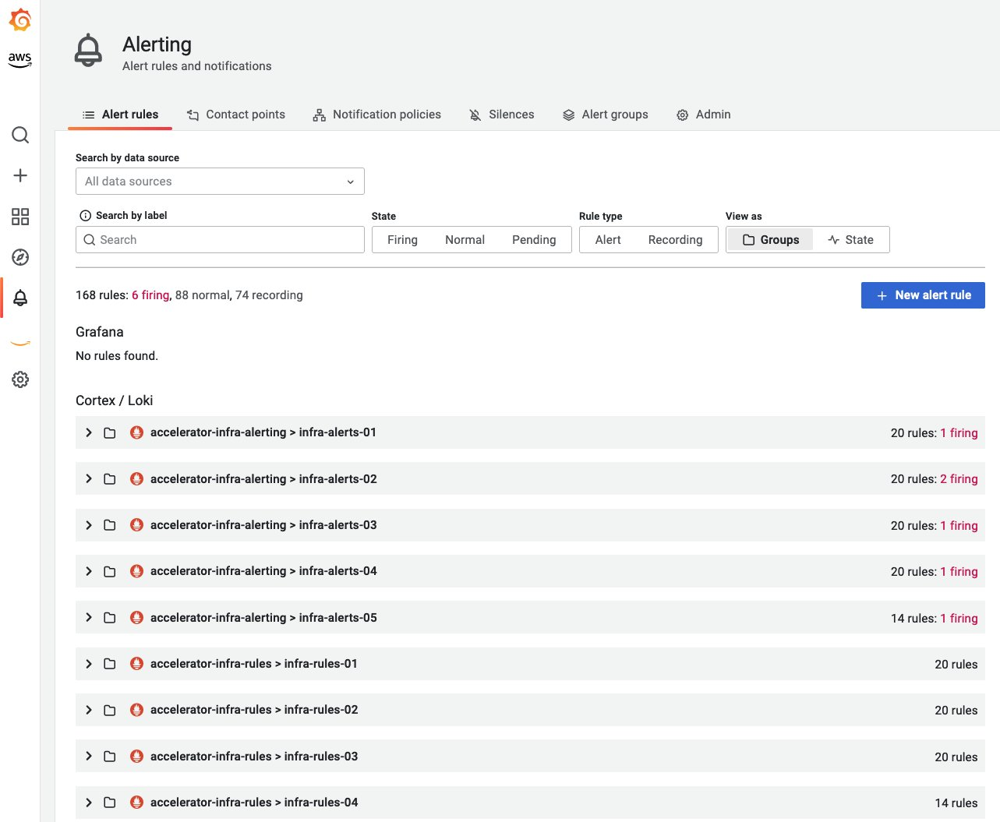
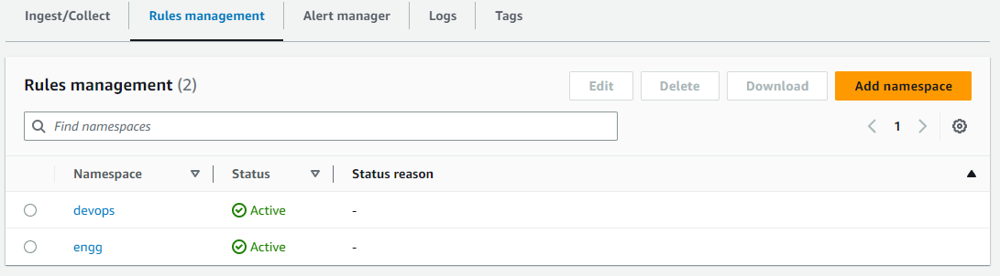

Amazon Managed Service for Prometheus Alert Manager¶
はじめに¶
Amazon Managed Service for Prometheus (AMP) は、「Recording rules」と「Alerting rules」の 2 種類のルールをサポートしています。これらのルールは、既存の Prometheus サーバーからインポートでき、定期的な間隔で評価されます。
Alerting rules を使用すると、PromQL としきい値に基づいて、アラート条件を定義できます。アラートルールの値がしきい値を超えると、Amazon Managed Service for Prometheus の Alert manager に通知が送信されます。これは、スタンドアロンの Prometheus の alert manager と同様の機能を提供します。アラートとは、Prometheus でアクティブになったときのアラートルールの結果です。
アラートルールファイル¶
Amazon Managed Service for Prometheus のアラートルールは、スタンドアロンの Prometheus と同じ形式の YAML 形式のルールファイルで定義されます。お客様は、Amazon Managed Service for Prometheus ワークスペース内に複数のルールファイルを持つことができます。ワークスペースは、Prometheus メトリクスの格納とクエリを行うための論理的なスペースです。
ルールファイルは通常、次のフィールドで構成されます:
Groups: A collection of rules that are run sequentially at a regular interval
Name: Name of the group
Rules: The rules in a group
Alert: Name of the alert
Expr: The expression for the alert to trigger
For: Minimum duration for an alert’s expression to be exceeding threshold before updating to a firing status
Labels: Any additional labels attached to the alert
Annotations: Contextual details such as a description or link
サンプルのルールファイルは次のようになります:
groups:
- name: test
rules:
- record: metric:recording_rule
expr: avg(rate(container_cpu_usage_seconds_total[5m]))
- name: alert-test
rules:
- alert: metric:alerting_rule
expr: avg(rate(container_cpu_usage_seconds_total[5m])) > 0
for: 2m
アラートマネージャー設定ファイル¶
Amazon Managed Service for Prometheus のアラートマネージャーは、スタンドアロンの Prometheus と同じ構造の YAML 形式の設定ファイルを使用して、受信サービスのアラートを設定します。設定ファイルは、アラートマネージャーとテンプレートの 2 つの主要なセクションで構成されます。
-
template_files には、アラートのアノテーションとラベルのテンプレートが含まれ、
$value、$labels、$externalLabels、$externalURL変数として公開されています。$labels変数には、アラート インスタンスのラベルのキーと値のペアが保持されます。設定された外部ラベルは、$externalLabels変数経由でアクセスできます。$value変数には、アラート インスタンスの評価された値が保持されます。.Value、.Labels、.ExternalLabels、.ExternalURLには、それぞれアラート値、アラート ラベル、グローバルに設定された外部ラベル、外部 URL (--web.external-urlで設定) が含まれます。 -
alertmanager_config には、スタンドアロンの Prometheus と同じ構造のアラートマネージャー設定が含まれます。
template_files と alertmanager_config の両方を含むサンプルのアラートマネージャー設定ファイルは、次のようになります。
template_files:
default_template: |
{{ define "sns.default.subject" }}[{{ .Status | toUpper }}{{ if eq .Status "firing" }}:{{ .Alerts.Firing | len }}{{ end }}]{{ end }}
{{ define "__alertmanager" }}AlertManager{{ end }}
{{ define "__alertmanagerURL" }}{{ .ExternalURL }}/#/alerts?receiver={{ .Receiver | urlquery }}{{ end }}
alertmanager_config: |
global:
templates:
- 'default_template'
route:
receiver: default
receivers:
- name: 'default'
sns_configs:
- topic_arn: arn:aws:sns:us-east-2:accountid:My-Topic
sigv4:
region: us-east-2
attributes:
key: severity
value: SEV2
アラートの主要な側面¶
Amazon Managed Service for Prometheus の Alert Manager 設定ファイル を作成する際に認識しておく必要がある 3 つの重要な側面があります。
-
グルーピング: これにより、障害や停止の影響範囲が大きく、多くのシステムに影響を及ぼし、同時に複数のアラートが発生した場合に、類似のアラートを 1 つの通知にまとめることができます。これはカテゴリー別 (ノードアラート、 Pod アラートなど) にグループ化するためにも使用できます。route ブロックを使用して、このグルーピングを設定できます。
-
抑制: これは、既にアクティブで発生した類似のアラートをスパムしないように、特定の通知を抑制する方法です。inhibit_rules ブロックを使用して抑制ルールを記述できます。
-
サイレンシング: メンテナンスウィンドウや計画停止中など、指定された期間中にアラートをミュートできます。サイレンシングする前に、入力されたアラートが等価性や正規表現の照合に成功することを確認します。 PutAlertManagerSilences API を使用してサイレンシングを作成できます。
Amazon Simple Notification Service(SNS)を通じてアラートをルーティング¶
現在、Amazon Managed Service for Prometheus の Alert Manager は Amazon SNS のみをレシーバーとしてサポートしています。alertmanager_config ブロックでキーとなるセクションは、レシーバーであり、これによりカスタマーは Amazon SNS でアラートを受信するように設定できます。以下のセクションは、レシーバーブロックのテンプレートとして使用できます。
- name: name_of_receiver
sns_configs:
- sigv4:
region: <AWS_Region>
topic_arn: <ARN_of_SNS_topic>
subject: somesubject
attributes:
key: <somekey>
value: <somevalue>
Amazon SNS の設定は、明示的に上書きされない限り、次のテンプレートをデフォルトとして使用します。
{{ define "sns.default.message" }}{{ .CommonAnnotations.SortedPairs.Values | join " " }}
{{ if gt (len .Alerts.Firing) 0 -}}
Alerts Firing:
{{ template "__text_alert_list" .Alerts.Firing }}
{{- end }}
{{ if gt (len .Alerts.Resolved) 0 -}}
Alerts Resolved:
{{ template "__text_alert_list" .Alerts.Resolved }}
{{- end }}
{{- end }}
参考資料: 通知テンプレートの例
Amazon SNS を介して E メール、Webhook、Slack など、さまざまな先にアラートをルーティングする¶
Amazon Managed Service for Prometheus の Alert Manager は、Amazon SNS を使用して E メール、Webhook(HTTP)、Slack、PageDuty、OpsGenie などの他の先に接続できます。
- E メール 通知が成功すると、Amazon SNS トピックを介して Amazon Managed Service for Prometheus Alert Manager から送信された E メールがアラートの詳細とともに受信されます。
- Amazon Managed Service for Prometheus Alert Manager は、アラートを JSON 形式で送信できます。これにより、Amazon SNS から下流の AWS Lambda や Webhook 受信エンドポイントで処理できます。
- Webhook 既存の Amazon SNS トピックを設定して、メッセージを Webhook エンドポイントに出力できます。Webhook は、イベント駆動型のトリガーに基づいてアプリケーション間で HTTP 経由で交換される直列化された形式でエンコードされた JSON または XML 形式のメッセージです。これを使用して、SIEM やコラボレーションツールをフックして、アラート、チケット、インシデント管理システムに接続できます。
- Slack お客様は、Slack の E メールチャネルインテグレーションを使用して、Slack と統合できます。これにより、Slack が E メールを受け取って Slack チャネルに転送したり、Lambda 関数を使用して SNS 通知を Slack に書き換えたりできます。
- PagerDuty
alertmanager_config定義のtemplate_filesブロックで使用されているテンプレートをカスタマイズして、ペイロードを PagerDuty に送信できます。これは、Amazon SNS の送信先として機能します。
アラートのステータス¶
アラートルールは、設定したしきい値を超えたときにアラートを任意の通知サービスに送信するための、式に基づいてアラート条件を定義します。ルールと式の例を以下に示します。
rules:
- alert: metric:alerting_rule
expr: avg(rate(container_cpu_usage_seconds_total[5m])) > 0
for: 2m
アラート式の結果が、ある時点で1つ以上のベクトル要素となった場合、そのアラートはアクティブと見なされます。アラートは active (pending | firing) または resolved のステータスを取ります。
- Pending: しきい値超過からの経過時間が記録間隔より短い
- Firing: しきい値超過からの経過時間が記録間隔より長く、Alert Manager がアラートをルーティングしている
- Resolved: しきい値がもう超過していないため、アラートが停止した
これは、ListAlerts API を使用して Amazon Managed Service for Prometheus Alert Manager エンドポイントにクエリを発行することで手動で確認できます。awscurl コマンドを使用します。サンプルリクエストを以下に示します。
awscurl https://aps-workspaces.us-east-1.amazonaws.com/workspaces/$WORKSPACE_ID/alertmanager/api/v2/alerts --service="aps" -H "Content-Type: application/json"
Amazon Managed Grafana での Amazon Managed Service for Prometheus アラートマネージャールール¶
Amazon Managed Grafana (AMG) のアラート機能を使用すると、お客様は Amazon Managed Grafana ワークスペースから Amazon Managed Service for Prometheus のアラートマネージャーアラートの可視性を得ることができます。Prometheus メトリクスを収集するために Amazon Managed Service for Prometheus ワークスペースを使用しているお客様は、サービスの完全マネージドなアラートマネージャーとルーラー機能を利用して、アラートと記録ルールを設定しています。この機能を使用すると、Amazon Managed Service for Prometheus ワークスペースで設定されたすべてのアラートルールと記録ルールを可視化できます。Prometheus アラートビューは、ワークスペースの構成オプションタブの Grafana アラートチェックボックスをオンにすることで、Amazon Managed Grafana (AMG) コンソールで確認できます。有効にすると、以前 Grafana ダッシュボードで作成されたネイティブな Grafana アラートも、Grafana ワークスペースの新しいアラートページに移行されます。
参考: Amazon Managed Grafana での Prometheus アラートマネージャールールの発表

基本的なモニタリングの推奨アラート¶
アラートは、堅牢なモニタリングとオブザーバビリティのベストプラクティスの重要な側面です。アラートメカニズムは、アラート疲労と重要なアラートを見逃すことのバランスをとる必要があります。以下は、ワークロードの全体的な信頼性を向上させるために推奨されるアラートの例です。組織のさまざまなチームは、インフラストラクチャとワークロードのモニタリングを異なる視点から行うため、このリストは要件とシナリオに基づいて拡張または変更できます。また、これは包括的なリストではありません。
- コンテナノードが割り当てられたメモリ制限の一定量(例: 80%)を超えて使用している
- コンテナノードが割り当てられた CPU 制限の一定量(例: 80%)を超えて使用している
- コンテナノードが割り当てられたディスク容量の一定量(例: 90%)を超えて使用している
- 名前空間の Pod 内のコンテナが割り当てられた CPU 制限の一定量(例: 80%)を超えて使用している
- 名前空間の Pod 内のコンテナがメモリ制限の一定量(例: 80%)を超えて使用している
- 名前空間の Pod 内のコンテナで再起動が多すぎる
- 名前空間の永続ボリュームがディスク容量の一定量(最大 75%)を超えて使用している
- デプロイメントで現在アクティブな Pod が実行されていない
- 名前空間の Horizontal Pod Autoscaler (HPA) が最大容量で実行されている
上記や類似のシナリオのアラートを設定するために必要な式を必要に応じて変更することが不可欠です。例えば、
expr: |
((sum(irate(container_cpu_usage_seconds_total{image!="",container!="POD", namespace!="kube-sys"}[30s])) by (namespace,container,pod) /
sum(container_spec_cpu_quota{image!="",container!="POD", namespace!="kube-sys"} /
container_spec_cpu_period{image!="",container!="POD", namespace!="kube-sys"}) by (namespace,container,pod) ) * 100) > 80
for: 5m
Amazon Managed Service for Prometheus 用 ACK コントローラー¶
Amazon Managed Service for Prometheus の AWS Controller for Kubernetes (ACK) コントローラーは、ワークスペース、アラートマネージャー、ルーラーのリソース用に利用できます。これにより、お客様は カスタムリソース定義 (CRD) とネイティブオブジェクトやサポート機能を提供するサービスを使用して、Kubernetes クラスター外でリソースを定義することなく Prometheus を利用できます。Amazon Managed Service for Prometheus 用 ACK コントローラー を使用すると、監視対象の Kubernetes クラスターから直接すべてのリソースを管理できるため、Kubernetes をワークロードの目的の状態についての「真実の情報源」として機能させることができます。ACK は、Kubernetes API を拡張し、AWS リソースを管理するために協調動作する Kubernetes CRD とカスタムコントローラーのコレクションです。
ACK を使用して構成されたアラートルールのスニペットを以下に示します。
apiVersion: prometheusservice.services.k8s.aws/v1alpha1
kind: RuleGroupsNamespace
metadata:
name: default-rule
spec:
workspaceID: WORKSPACE-ID
name: default-rule
configuration: |
groups:
- name: example
rules:
- alert: HostHighCpuLoad
expr: 100 - (avg(rate(node_cpu_seconds_total{mode="idle"}[2m])) * 100) > 60
for: 5m
labels:
severity: warning
event_type: scale_up
annotations:
summary: Host high CPU load (instance {{ $labels.instance }})
description: "CPU load is > 60%\n VALUE = {{ $value }}\n LABELS = {{ $labels }}"
- alert: HostLowCpuLoad
expr: 100 - (avg(rate(node_cpu_seconds_total{mode="idle"}[2m])) * 100) < 30
for: 5m
labels:
severity: warning
event_type: scale_down
annotations:
summary: Host low CPU load (instance {{ $labels.instance }})
description: "CPU load is < 30%\n VALUE = {{ $value }}\n LABELS = {{ $labels }}"
IAM ポリシーを使用したルールへのアクセス制限¶
組織では、各チームが自身の記録とアラートの要件に合わせてルールを作成および管理する必要があります。Amazon Managed Service for Prometheus のルール管理では、AWS Identity and Access Management(IAM)ポリシーを使用してルールへのアクセスを制御できるため、各チームは rulegroupnamespaces によってグループ化された独自のルールとアラートのセットを制御できます。
以下の画像は、Amazon Managed Service for Prometheus のルール管理に追加された devops と engg という 2 つのルールグループ名前空間の例を示しています。

以下の JSON は、上記の devops ルールグループ名前空間へのアクセスを制限するサンプル IAM ポリシーです。指定されたリソース ARN が制限されています。以下の IAM ポリシーで注目すべきアクションは、PutRuleGroupsNamespace と DeleteRuleGroupsNamespace で、これらは AMP ワークスペースの rulegroupsnamespace の指定されたリソース ARN に制限されています。ポリシーが作成されると、必要なユーザー、グループ、またはロールに割り当てることができ、必要なアクセス制御を行うことができます。IAM ポリシーのアクションは、必要なアクションと許可されたアクションに基づいて、必要に応じて変更または制限できます。
{
"Version": "2012-10-17",
"Statement": [
{
"Sid": "VisualEditor0",
"Effect": "Allow",
"Action": [
"aps:RemoteWrite",
"aps:DescribeRuleGroupsNamespace",
"aps:PutRuleGroupsNamespace",
"aps:DeleteRuleGroupsNamespace"
],
"Resource": [
"arn:aws:aps:us-west-2:XXXXXXXXXXXX:workspace/ws-8da31ad6-f09d-44ff-93a3-xxxxxxxxxx",
"arn:aws:aps:us-west-2:XXXXXXXXXXXX:rulegroupsnamespace/ws-8da31ad6-f09d-44ff-93a3-xxxxxxxxxx/devops"
]
}
]
}
以下の awscli の対話は、IAM ポリシーのリソース ARN(つまり devops ルールグループ名前空間)を介して制限されたルールグループ名前空間へのアクセスを持つ IAM ユーザーの例であり、同じユーザーがアクセス権のない他のリソース(つまり engg ルールグループ名前空間)へのアクセスが拒否されることを示しています。
$ aws amp describe-rule-groups-namespace --workspace-id ws-8da31ad6-f09d-44ff-93a3-xxxxxxxxxx --name devops
{
"ruleGroupsNamespace": {
"arn": "arn:aws:aps:us-west-2:XXXXXXXXXXXX:rulegroupsnamespace/ws-8da31ad6-f09d-44ff-93a3-xxxxxxxxxx/devops",
"createdAt": "2023-04-28T01:50:15.408000+00:00",
"data": "Z3JvdXBzOgogIC0gbmFtZTogZGV2b3BzX3VwZGF0ZWQKICAgIHJ1bGVzOgogICAgLSByZWNvcmQ6IG1ldHJpYzpob3N0X2NwdV91dGlsCiAgICAgIGV4cHI6IGF2ZyhyYXRlKGNvbnRhaW5lcl9jcHVfdXNhZ2Vfc2Vjb25kc190b3RhbFsybV0pKQogICAgLSBhbGVydDogaGlnaF9ob3N0X2NwdV91c2FnZQogICAgICBleHByOiBhdmcocmF0ZShjb250YWluZXJfY3B1X3VzYWdlX3NlY29uZHNfdG90YWxbNW1dKSkKICAgICAgZm9yOiA1bQogICAgICBsYWJlbHM6CiAgICAgICAgICAgIHNldmVyaXR5OiBjcml0aWNhbAogIC0gbmFtZTogZGV2b3BzCiAgICBydWxlczoKICAgIC0gcmVjb3JkOiBjb250YWluZXJfbWVtX3V0aWwKICAgICAgZXhwcjogYXZnKHJhdGUoY29udGFpbmVyX21lbV91c2FnZV9ieXRlc190b3RhbFs1bV0pKQogICAgLSBhbGVydDogY29udGFpbmVyX2hvc3RfbWVtX3VzYWdlCiAgICAgIGV4cHI6IGF2ZyhyYXRlKGNvbnRhaW5lcl9tZW1fdXNhZ2VfYnl0ZXNfdG90YWxbNW1dKSkKICAgICAgZm9yOiA1bQogICAgICBsYWJlbHM6CiAgICAgICAgc2V2ZXJpdHk6IGNyaXRpY2FsCg==",
"modifiedAt": "2023-05-01T17:47:06.409000+00:00",
"name": "devops",
"status": {
"statusCode": "ACTIVE",
"statusReason": ""
},
"tags": {}
}
}
$ cat > devops.yaml <<EOF
> groups:
> - name: devops_new
> rules:
> - record: metric:host_cpu_util
> expr: avg(rate(container_cpu_usage_seconds_total[2m]))
> - alert: high_host_cpu_usage
> expr: avg(rate(container_cpu_usage_seconds_total[5m]))
> for: 5m
> labels:
> severity: critical
> - name: devops
> rules:
> - record: container_mem_util
> expr: avg(rate(container_mem_usage_bytes_total[5m]))
> - alert: container_host_mem_usage
> expr: avg(rate(container_mem_usage_bytes_total[5m]))
> for: 5m
> labels:
> severity: critical
> EOF
$ base64 devops.yaml > devops_b64.yaml
$ aws amp put-rule-groups-namespace --workspace-id ws-8da31ad6-f09d-44ff-93a3-xxxxxxxxxx --name devops --data file://devops_b64.yaml
{
"arn": "arn:aws:aps:us-west-2:XXXXXXXXXXXX:rulegroupsnamespace/ws-8da31ad6-f09d-44ff-93a3-xxxxxxxxxx/devops",
"name": "devops",
"status": {
"statusCode": "UPDATING"
},
"tags": {}
}
$ aws amp describe-rule-groups-namespace --workspace-id ws-8da31ad6-f09d-44ff-93a3-xxxxxxxxxx --name engg
An error occurred (AccessDeniedException) when calling the DescribeRuleGroupsNamespace operation: User: arn:aws:iam::XXXXXXXXXXXX:user/amp_ws_user is not authorized to perform: aps:DescribeRuleGroupsNamespace on resource: arn:aws:aps:us-west-2:XXXXXXXXXXXX:rulegroupsnamespace/ws-8da31ad6-f09d-44ff-93a3-xxxxxxxxxx/engg
$ aws amp put-rule-groups-namespace --workspace-id ws-8da31ad6-f09d-44ff-93a3-xxxxxxxxxx --name engg --data file://devops_b64.yaml
An error occurred (AccessDeniedException) when calling the PutRuleGroupsNamespace operation: User: arn:aws:iam::XXXXXXXXXXXX:user/amp_ws_user is not authorized to perform: aps:PutRuleGroupsNamespace on resource: arn:aws:aps:us-west-2:XXXXXXXXXXXX:rulegroupsnamespace/ws-8da31ad6-f09d-44ff-93a3-xxxxxxxxxx/engg
$ aws amp delete-rule-groups-namespace --workspace-id ws-8da31ad6-f09d-44ff-93a3-xxxxxxxxxx --name engg
An error occurred (AccessDeniedException) when calling the DeleteRuleGroupsNamespace operation: User: arn:aws:iam::XXXXXXXXXXXX:user/amp_ws_user is not authorized to perform: aps:DeleteRuleGroupsNamespace on resource: arn:aws:aps:us-west-2:XXXXXXXXXXXX:rulegroupsnamespace/ws-8da31ad6-f09d-44ff-93a3-xxxxxxxxxx/engg
ルールの使用を許可するユーザー権限も、IAM ポリシー(ドキュメントのサンプル)を使用して制限できます。
詳細については、お客様は AWS ドキュメント をお読みいただくか、Amazon Managed Service for Prometheus アラートマネージャーに関する AWS Observability ワークショップ をご覧ください。
参考資料: Amazon Managed Service for Prometheus がアラートマネージャーとルーラーで一般提供開始